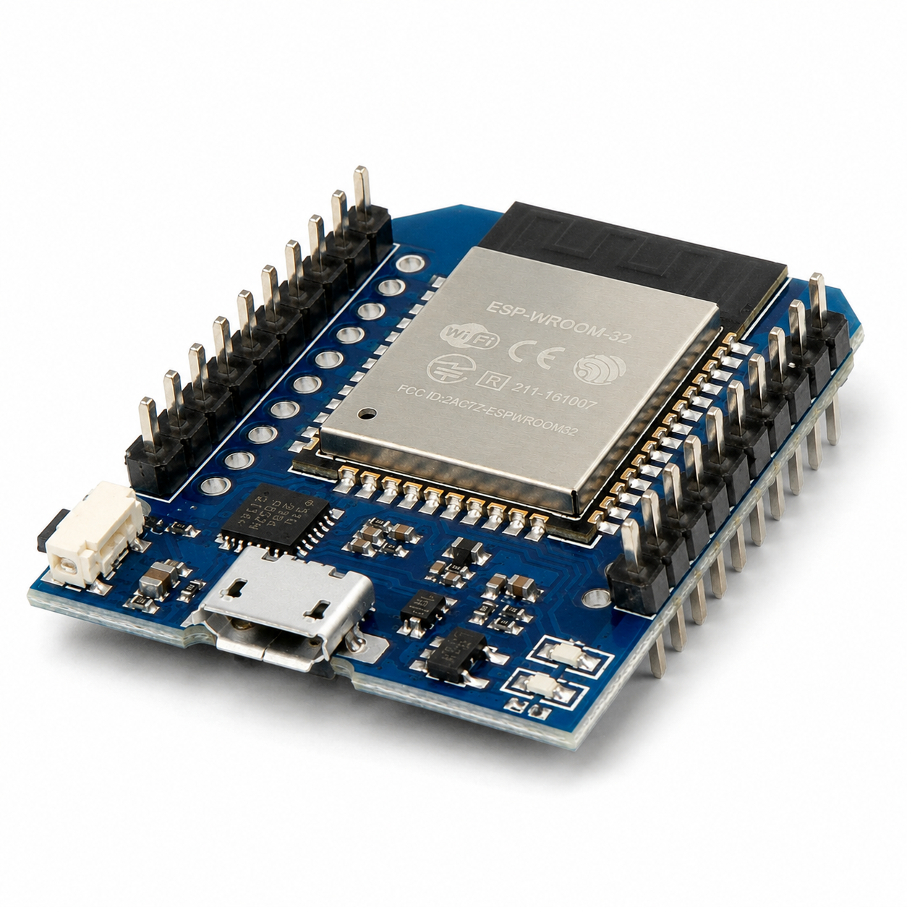

ESP32 D1 Mini

Der ESP32 ist ein vielseitiger Mikrocontroller mit WLAN und Bluetooth. Diese Seite stellt typische ESP32-Entwicklungsboards vor und hilft bei der Orientierung.
Die Begriffe ESP32-Modul, ESP32-Devboard und Breakoutboard werden oft vermischt. Hier erfährst du, worauf es bei den verschiedenen Komponenten ankommt.
ESP32-Modelle, ESP32-Module, ESP32-Development-Boards und ESP32-Breakout-Boards